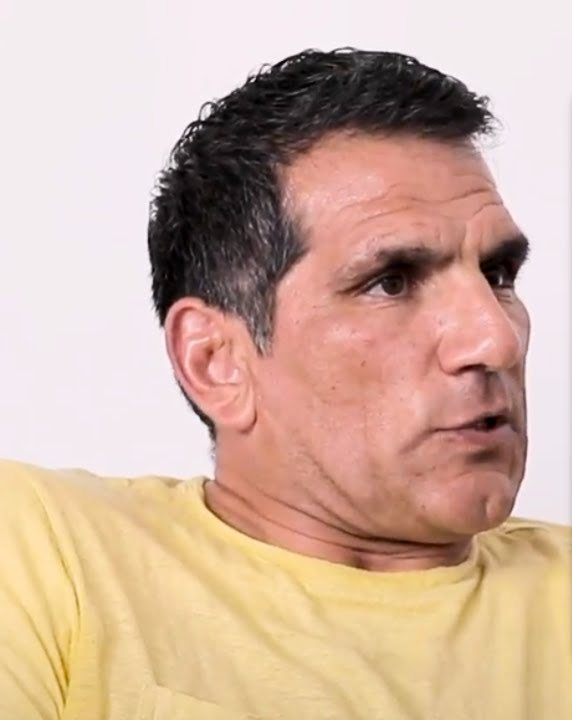

Dirige Kalah a escala internacional desde 2021.
Certifica y acompaña a los instructores del sistema fuera de África, es el instructor jefe en España y en Europa, y enseña a quien tiene que responder de la seguridad de otros.
En julio de 2021, Idan Abolnik, fundador del sistema de combate israelí Kalah, se retiró de la dirección activa por motivos de salud y le traspasó el mando. Desde entonces Nahum Belver es el responsable de acompañar y certificar a los instructores del sistema fuera de África, un reparto que la organización británica de Kalah recoge por escrito en sus cursos de instructor.
Fuentes: kalah.cz, noticia del 1 de julio de 2021 · kalah.uk, cursos de instructorSu vínculo con Kalah viene de antes. En 2017 completó en la República Checa el curso de instructor de niveles 1 y 2. En enero de 2022 dirigió en Praga el primer seminario de la ciudad, ya como responsable del sistema a nivel mundial. También ha enseñado en Polonia, y es el instructor jefe de Kalah en España y en Europa.
Fuentes: kalah.cz, noticias del 1 de junio de 2017 y del 24 de enero de 2022 · canal Kalah Combat System EspañaAntes trabajó desde Madrid, donde cofundó ProMContact y ejerció como instructor jefe de tiro de combate. Esa fue la vía por la que el sistema Kalah llegó a España.
Su enseñanza se dirige a dos públicos que no se parecen en nada. Por un lado, profesionales: escoltas, equipos de protección y agentes, con materia de protección de terceros, defensa ante arma blanca de pie y en el suelo, amenaza con arma corta y técnicas de reducción para uno y para dos agentes. Por otro, civiles que no han entrenado nunca.
En julio de 2026 abrió Realidad Operativa, donde analiza decisiones bajo presión aplicadas a la seguridad y al liderazgo.

Lo comprobable, con su fecha
- 2017
Completa en la República Checa el curso de instructor de Kalah, niveles 1 y 2.
- Julio de 2021
Idan Abolnik se retira de la dirección activa del sistema y le traspasa el mando de Kalah a escala internacional.
- Enero de 2022
Dirige en Praga el primer seminario de Kalah de la ciudad, ya como responsable mundial del sistema.
- Desde 2021
Acompaña y certifica a los instructores de Kalah fuera de África, según recoge por escrito la organización británica del sistema.
- Julio de 2026
Abre Realidad Operativa, canal de análisis de decisiones operativas.
El objetivo es desarrollar algo que ninguna técnica, procedimiento o herramienta puede sustituir: criterio operativo.
Nahum Belver, Realidad Operativa
Esa frase es suya y explica bastante bien cómo enseña. En sala no se corrigen posturas para que queden bonitas: se pregunta por qué se ha hecho eso y qué pasa si el otro no colabora. Fuera de sala, el mismo criterio aplicado a incidentes reales.